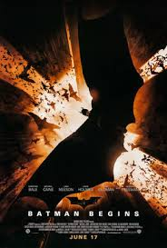
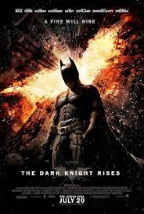

De Drie Films
Batman Begins (2005)

De eerste film toont de oorsprong van Bruce Wayne als Batman. Na de moord op zijn ouders reist hij de wereld rond om zijn angsten te overwinnen. Hij traint bij de League of Shadows onder leiding van Ra's al Ghul en keert terug naar Gotham om de stad te redden. De film vestigde een gloednieuwe, realistische toon voor het genre.
The Dark Knight (2008)

Algemeen beschouwd als het absolute hoogtepunt van de trilogie. Heath Ledger's vertolking van de Joker is legendarisch en leverde hem een postume Oscar op. De film behandelt thema's als chaos, morele keuzes en de prijs van heldenmoed. Het is meer dan een superheldenfilm — het is een meeslepend misdaaddrama.
The Dark Knight Rises (2012)

Het grandioze slot van de trilogie. Een gebroken Bruce Wayne moet zichzelf opnieuw uitvinden als de schurk Bane Gotham City volledig overneemt. De film biedt een emotionele en bevredigende afsluiting van het verhaal met een onvergetelijk einde.